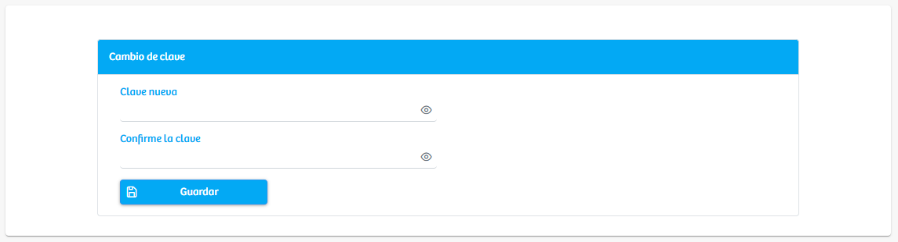

Modulos Sas-Web
Funcionalidades
Cambiar Contraseña
En este primer modulo del aplicativo, podremos encontrar un caja con su titulo: “Cambio de clave”, la cual contiene 2 campos de texto, donde se nos pide ingresar una contraseña nueva y luego la confirmación de esta para así completar el proceso de cambio de contraseña. Cada usuario podrá hacer este proceso, pero si en algún momento este olvida su contraseña, deberá comunicarse con el equipo de administración de sistemas de salud.
